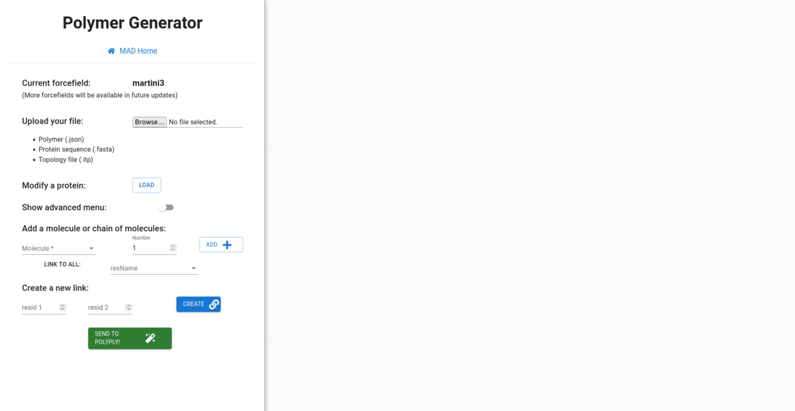
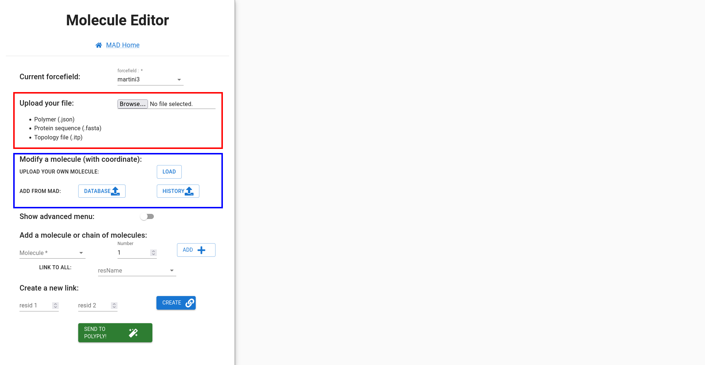

- Add tripeptide: Select the forcefield martini3 and then choose the good amino acid (here we choose Glutamic acid) and select the number of residues that you want, in our case we choose 3 repetitions. So a chain of 3 Glutamic acids will be added.
- Add dipeptide and link: Add another amino acid chain ( 2 Arginines) and link, then to our previous molecule (you can drag and drop with your mouse to create a link, use the menu, or click right and use the "magic link")
- Send for computation: Send to the server to generation, you can change the size of the box for coordinate generation, change the number of molecules that you want in this box and most important choose a name for your molecule.
- Done: You can download your molecule and save it in your history.
Polymer generator
Welcome to our new MAD feature! We are excited to offer you an easy way to generate new polymer (for example:
polysaccharides, Battery polymer) or to modify existing molecules (for example Protein PEGylation,
Glycosylation). This interface allows anyone with a free account to create new molecules in a user-friendly way, without any
command line or computing skills. Our interface is fully automated, using
polyply[1] program to generate the
necessary files and coordinates for molecular dynamic simulations. Users can generate a molecule using some of
the molecular compounds provided by Polyply by using the Martini3 forcefield or the Martini 2 forcefield, or you can load your molecule
(from the MAD database, MAD history, or upload file directly).
The following example will guide you through the multiple uses of MAD: Polymer generator.
1. How does it work?
2. Create a simple peptide
3. Create an isopeptide link
4. Load a molecule
5. Pegylate a protein
6. Limitation
person_add
Because the service makes use of our computational resources, it is required for you to sign
in order to have access to the MAD:System Builder
General organization
The client interface is divided into two sections: the viewer and the menu.
The viewer allows users to interact with their molecule through a custom right-click panel menu, which
changes based on the location clicked (a molecule, a link, or nowhere) and provides a feature (remove
residue,
select the whole polymer, remove the link, and more).
The menu allows users to add new residues, load molecules, generate links, and, once the molecule is
complete, send it to the server for file generation. The server then runs the Polyply program to generate
the topology and coordinates. If there are any issues with the process, an error message is displayed to the
user, providing more accurate information with the involvement of Polyply. Once the coordinates are
generated, a small minimization is run with gromacs to
ensure the reliability of the molecule, which is then displayed in the client interface. Users have the
option to download all of the generated files and add them to their
history for future use with other MAD features.
To be more precise, when we use martini2 version, it is the version martini_v2.1-dna.itp and for martini3 is martini_v3.0.0.itp.
Ajouter un schema
Ajouter un schema
Create a simple peptide
In this part, we generate a small peptide of 5 amino acids composed of 3 GLU and 2 ASP with martini3 forcefield.

info_outline
Be sure that you have linked residue with a continuous id number ( do not do : (1-2-3)-(7-8)-(4-5-6) do
(1-2-3)-(4-5-6)-(7-8) instead). It may generate an error with polyply if the continuity is not respected.
How to load a molecule
You can load and import molecules in different ways.
-
Upload a simple molecule : You can load serveral type of files
in Polymer Generator.Here are the different types of files you can upload (in these cases,
you don't have any
information about the coordinate).
- JSON file, who contains a polymer description that you have previoulsy download in JSON format or that you have allready created with polyply "gen-itp".This JSON should contain a list of nodes (molecules) and links between them. Exemple here.
- Fasta file: A protein sequence in Fasta format who respect the one letter code.
- ITP file: A topology file for a molecule that is not already inside polyply database, in this case, be sure that your molecule is right coarse-grained in martini3.
- Modify a molecule (Add/substitute polymer to a macromolecule): To load your molecule and add/substitute polymer you need to provide 2 different files : coordinates (format .gro) and the topology (format .itp).
- Load from database or history (Advanced fonction) You can load a molecule from the database or your history. You will load topology and coordinate file.
- Design your own itp link file (Avanced fonction) Because polyply has a limited list of a molecule, you would want to create your linker file to have better control of the output result. You can see how to design this file here.
warning
Impossible to load 2 coordinates files for now.
In such case, the first coordinate file will be replaced by the
new one.

Create an isopeptidique link
In this part, we want to create a link not handled by polyply. We want to do an isopeptide link
between a peptide that contains only lysine for instance and a peptide that contains valine and
Glutamic
acid. In this case, we don't have to change the beads type.
- Create 2 peptides: As we have seen before, create 2 peptide chains. The first one will contain only Valine and the second one contains different amino acids
- Link and send: Now you can link it and send it to the server to computation.
- Fix link: A problem with be raised by polyply. The link between amino acid is not provided by the polyply database. So you should fix this link, you can define which bead you want to connect, change beads type, and other link parameters.

Pegylate a protein
In this part, we want to apply a post-translation modification : attaching polyethylene glycol (PEG or PEO)
molecules to a protein. This modification is called Pegylation and it helps improve the properties
of a protein :
- Stability: Polyethylene glycol is a stable molecule that does not break down easily, so attaching it to a protein can help to stabilize the protein and extend its shelf life.
- Solubility: This molecule is hydrophilic (water-loving), so attaching it to a protein can help to increase the protein's solubility in water. This can be especially useful for proteins that tend to aggregate or clump together, as the PEG can help to keep them in solution.
- Lifetime: Polyethylene glycol can shield a protein from being recognized and broken down by the body's immune system, which can help to extend the protein's half-life in the body. This can be especially useful for proteins that are normally broken down quickly, as it allows them to remain active for a longer period.
- Targeting: It can be attached to proteins in such a way that it can act as a "stealth" molecule, helping the protein to evade the body's immune system and targeting specific cells or tissues for delivery.
- Load your protein: Load the file about your protein: we need the coordinates of the protein (format .gro) and the topology (format .itp). Section "Modify a protein" and upload your files.
- Add polyethylene glycol: Then add your polyethylene glycol (called PEO on the polyply molecule list residue). You can choose to link them directly on a certain type of residue (Alanine for instance), then you will add a chain of PEO of the desired length to every Alanine. You can also do it by hand: generate a chain and plug it into your protein "manually".
- Send for computation : Send to the server to do your modification. You will have a mistake because polyply doesn't know how to link a PEO and an amino acid. So click on the fixed link and select the beads that you want to connect (You can apply to every residue of the same type). You can download the files used for the demo :

Current limitation
There is still some limitation to this new MAD feature :
- Impossible generate structure:, For now, generate big structure is not avaible. Because computational resources are limited and not allowed to generate a big system. For exemple it's impossible to create a sphere of a cylinder.
- Number of molecule limited: Polyply has a limited number of molecule avaible. More molecules will be available in future updates. You can find all the molecules containing in polyply database for martini3 here.
- Links are limited: For the moment all links between molecules are provided by polyply...
References
- Grünewald, F., Alessandri, R., Kroon, P.C. et al. Polyply; a python suite for facilitating simulations of macromolecules and nanomaterials. Nat Commun 13, 68 (2022). https://doi.org/10.1038/s41467-021-27627-4